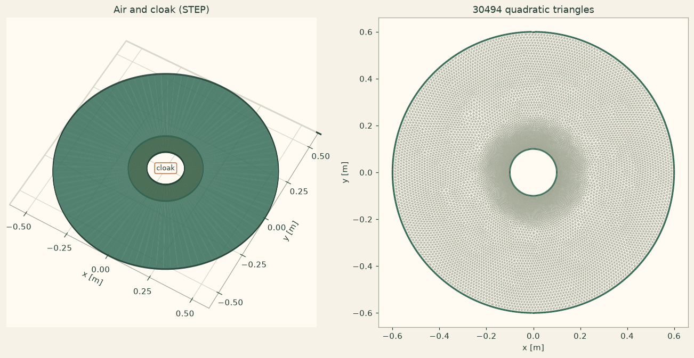

Docs › Examples › Acoustic cloak around a rigid cylinder
Pressure acoustics, metamaterials · 2D
Acoustic cloak around a rigid cylinder
A rigid cylinder five wavelengths around is wrapped in an anisotropic metamaterial shell that guides a sound wave around it.
Run locally with OneSimulation. The example downloads are free. Running them requires an activated runtime. The current pilot runs on macOS on Apple Silicon with CPython 3.13. Installation and activation · View pilot plans. Scope of the reference checks.

What it computes
OneSimulation cuts the air from a STEP plate and solves the two-dimensional Helmholtz equation with quadratic triangles; inside the cloak the inverse density is a 2 x 2 tensor and the compressibility a graded field at every quadrature point, both from the transformation-acoustics map. The incident wave enters through the cylindrical-wave admittance of the outer circle, and the same model without the shell gives the bare cylinder. The script that builds the STEP file comes with the notebook.
What it checks
The bare cylinder scatters as the exact series predicts (largest deviation 0.010 p0 on a ring at 0.35 m, RMS 0.398 against 0.399 p0); the cloak lowers the scattered power by 27.2 dB, against 29.2 dB for the 3.9 mm virtual cylinder that the regularised cloak leaves, with a residual of 0.03 p0 instead of 0.024 p0.
Geometry
The notebook starts at the import of the CAD files acoustic_cloak.step, acoustic_cloak_shell.step: STEP (AP242), readable by any CAD program, with the names of the faces that the boundary conditions use. Put them next to the notebook.

The geometry script
The script acoustic_cloak_geometry.py builds the geometry with the CAD objects of OneSimulation and writes the files. Change a dimension there, run it, and run the notebook again.
"""Geometry of the OneSimulation example "Acoustic cloak around a rigid cylinder".
Builds, as thin plates with the CAD objects of OneSimulation, the air around a rigid cylinder of
radius 0.1 m out to a circle of radius 0.6 m (acoustic_cloak.step, with the outer face named outer
and the cylinder face named obstacle) and the cloak, an annulus between 0.1 m and 0.2 m
(acoustic_cloak_shell.step).
"""
from onesim.cad.d3 import Cylinder
obstacle, cloak, outer, thickness = 0.1, 0.2, 0.6, 0.01
air = Cylinder(radius=outer, length=thickness) - Cylinder(
radius=obstacle, length=thickness
)
round_face = lambda radius: (
lambda face: face.kind == "cylinder" and abs(face.radius - radius) < 1e-9
)
air = air.grouped(
outer=air.select(faces=round_face(outer)),
obstacle=air.select(faces=round_face(obstacle)),
)
air.save("acoustic_cloak.step")
(
Cylinder(radius=cloak, length=thickness)
- Cylinder(radius=obstacle, length=thickness)
).save("acoustic_cloak_shell.step")The notebook
The complete notebook, cell by cell. Run it to produce the figures and the comparison printout.
A rigid cylinder of radius \(a=0.1\) m scatters a plane sound wave strongly when it is several wavelengths around (\(ka=2\pi\) here). Transformation acoustics (S. A. Cummer and D. Schurig, New J. Phys. 9, 45, 2007; H. Chen and C. T. Chan, Appl. Phys. Lett. 91, 183518, 2007) builds a shell \(R_1<r<R_2\) that guides the wave around the obstacle: the radial map \(r=R_1+r'\,(R_2-R_1)/R_2\) squeezes the disc \(r'<R_2\) of empty air into the shell, and the Helmholtz equation \(\nabla\cdot(\boldsymbol\rho^{-1}\nabla p)+\omega^2\kappa^{-1}p=0\) in the shell then needs an anisotropic density and a graded bulk modulus,
The ideal cloak (\(R_1=a\)) has a singular density at the obstacle. As in real designs the map starts slightly inside the obstacle, at \(R_1=0.098\) m, which keeps the material finite. The obstacle then looks like a rigid cylinder of the virtual radius \(a'=R_2(a-R_1)/(R_2-R_1)=3.9\) mm.
| boundary | condition | |---|---| | obstacle, \(r=a\) | rigid, \(\partial p/\partial n=0\) | | outer circle, \(R=0.6\) m | the scattered wave \(p-p_i\) is outgoing: \(v_n=-i\,\dfrac{H_1^{(2)}(kR)}{H_0^{(2)}(kR)}\,\dfrac{p-p_i}{\rho_0c}\) |
The outer condition is exact for the circularly symmetric part of the scattered wave and leaves a small reflection of its directional part, of order \(1/(kR)^2\approx10^{-3}\).
Reference. A rigid cylinder of radius \(a\) in the plane wave \(p_i=p_0e^{-ikx}\) scatters (P. M. Morse and K. U. Ingard, Theoretical Acoustics, §8.1)
Outside the cloak its scattered wave must be that of the virtual cylinder of radius \(a'\).
import numpy as np
from onesim.cad.exchange import load
from onesim.meshing import TriangularMesher
from onesim.numerics.fem import FiniteElement, Lagrange
from onesim.physics.acoustics import (
AcousticHarmonicPressure,
ComplexPressurePencil,
ConstantPressureForms,
PressureAdmittanceBoundary,
PressureTraceSamples,
SampledPressureAdmittanceForms,
SampledPressureVolumeForms,
pressure_space_volume_samples,
)
from onesim.visualization import plots, theme
from scipy.sparse.linalg import spsolve
from scipy.special import h2vp, hankel2, jvp
theme.set()
c0, rho0, amplitude = 343.0, 1.204, 1.0
impedance = rho0 * c0
obstacle, inner, cloak = 0.1, 0.098, 0.2
omega = 2 * np.pi * c0 / 0.1
k = omega / c0
virtual = cloak * (obstacle - inner) / (cloak - inner)Geometry and mesh
load reads the air around the obstacle and the cloak shell; section cuts the air at half thickness. The triangles are 12.5 mm (an eighth of the wavelength) in the open air, 6 mm at the outer rim of the cloak and 2.5 mm at the obstacle, where the cloak compresses the wave most.
air, shell = load("acoustic_cloak.step"), load("acoustic_cloak_shell.step")
plane = air.section((0, 0, 1), origin=(0, 0, 0.005))
outer = plane.size[0] / 2
size = lambda r: np.where(
r < obstacle,
0.0125,
np.where(
r < cloak,
0.0025 + 0.035 * (r - obstacle),
np.minimum(0.0125, 0.006 + 0.1 * (r - cloak)),
),
)
mesh = TriangularMesher(
target_size=0.0125, size_field=lambda p: size(np.hypot(p[:, 0], p[:, 1]))
).generate(plane)
view = plots.Camera(elevation=60, azimuth=-60)
fig = plots.figure(1, 2, size=(15, 7))
plots.geometry(
[air.named("air"), shell.named("cloak")],
camera=view,
title="Air and cloak (STEP)",
ax=fig[0],
)
plots.mesh(
mesh,
groups=("all",),
legend=False,
title=f"{mesh.cell_count} quadratic triangles",
ax=fig[1],
)
plots.show()Model
Quadratic Lagrange elements. SampledPressureVolumeForms takes the inverse density as a \(2\times2\) tensor at every quadrature point - \(\rho_r^{-1}\hat{\mathbf r}\hat{\mathbf r}^\top+ \rho_\theta^{-1}\hat{\boldsymbol\theta}\hat{\boldsymbol\theta}^\top\) inside the cloak, \(\rho_0^{-1}\) outside - and the compressibility likewise. The incident wave enters through the outer circle: its trace carries the admittance \(Y\) and the load \(\int\big(\rho_0^{-1}\partial_np_i+i\omega Yp_i\big)\phi_i\,\mathrm dS\). The bare cylinder is the same model with air in the shell.
space = FiniteElement(element=Lagrange(order=2)).bind_space(mesh)
radial = lambda points: points / np.linalg.norm(points, axis=1)[:, None]
stretch = lambda points, on: np.where(
on & (np.linalg.norm(points, axis=1) < cloak),
(np.linalg.norm(points, axis=1) - inner) / np.linalg.norm(points, axis=1),
1.0,
)
inverse_density = (
lambda points, on: (
stretch(points, on)[:, None, None]
* np.einsum("qi,qj->qij", radial(points), radial(points))
+ 1
/ stretch(points, on)[:, None, None]
* (np.eye(2) - np.einsum("qi,qj->qij", radial(points), radial(points)))
)
/ rho0
)
compressibility = lambda points, on: np.where(
on & (np.linalg.norm(points, axis=1) < cloak),
(cloak / (cloak - inner)) ** 2 * stretch(points, on),
1.0,
) / (rho0 * c0**2)
rim = [
PressureTraceSamples(space.cell_dofs[owner], points, weights, basis)
for owner, points, weights, _, basis, _ in map(
space.trace_data, mesh.facets(plane.boundaries.outer_wall)
)
]
trace = SampledPressureAdmittanceForms(
size=space.dof_count,
samples=lambda: iter(rim),
admittance=lambda omega, sample: 1.0,
)(0.0)
admittance = -1j * hankel2(1, k * outer) / hankel2(0, k * outer) / impedance
nodes = space.dof_coordinates
incident = amplitude * np.exp(-1j * k * nodes[:, 0])
load_vector = trace @ (
(-1j * k * nodes[:, 0] / outer * incident) / rho0
+ 1j * omega * admittance * incident
)
solutions = {}
for name, on in (("bare cylinder", False), ("cloaked cylinder", True)):
volume = ConstantPressureForms(
*SampledPressureVolumeForms(
size=space.dof_count,
samples=lambda: pressure_space_volume_samples(space),
inverse_density=lambda omega, sample: inverse_density(sample.points, on),
compressibility=lambda omega, sample: compressibility(sample.points, on),
)(0.0)
)
solutions[name] = (
AcousticHarmonicPressure(
operator=ComplexPressurePencil(
volume,
boundary=PressureAdmittanceBoundary(lambda omega: admittance * trace),
),
load=lambda omega: load_vector,
angular_frequencies=[omega],
linear_solver=spsolve,
)
.run()
.pressure[0]
)
print(
f"{space.dof_count} pressure unknowns, {mesh.cell_count} triangles; virtual cylinder radius {1e3 * virtual:.2f} mm"
)Results
The scattered wave \(p-p_i\) on a circle of radius 0.35 m around the obstacle, against the series for the bare cylinder and for the virtual cylinder.
orders = np.arange(80)
series = (
lambda radius, r, theta: -amplitude
* (
np.where(orders == 0, 1, 2)
* (-1j) ** orders
* jvp(orders, k * radius)
/ h2vp(orders, k * radius)
)
@ (hankel2(orders[:, None], k * r) * np.cos(orders[:, None] * theta))
)
theta = np.linspace(0.0, 2 * np.pi, 721)
ring = 0.35 * np.column_stack((np.cos(theta), np.sin(theta)))
scattered = {
name: np.asarray(space.evaluate(p, ring)) - amplitude * np.exp(-1j * k * ring[:, 0])
for name, p in solutions.items()
}
exact = {
"bare cylinder": series(obstacle, 0.35, theta),
"cloaked cylinder": series(virtual, 0.35, theta),
}
for name in solutions:
print(
f"{name}: max |p_s| at 0.35 m {np.abs(scattered[name]).max():.4f} p0 (series {np.abs(exact[name]).max():.4f} p0), "
f"largest deviation {np.abs(scattered[name] - exact[name]).max():.4f} p0, "
f"RMS of |p_s| {np.sqrt(np.mean(np.abs(scattered[name]) ** 2)):.4f} p0 (series {np.sqrt(np.mean(np.abs(exact[name]) ** 2)):.4f} p0)"
)
print(
f"the cloak lowers the scattered power by {10 * np.log10(np.mean(np.abs(scattered['bare cylinder']) ** 2) / np.mean(np.abs(scattered['cloaked cylinder']) ** 2)):.1f} dB "
f"(series: {10 * np.log10(np.mean(np.abs(exact['bare cylinder']) ** 2) / np.mean(np.abs(exact['cloaked cylinder']) ** 2)):.1f} dB)"
)Figure
The instantaneous pressure with the bare and with the cloaked cylinder: behind the bare one a shadow and interference fringes, around the cloaked one plane wave fronts that close again behind it. Right: the scattered amplitude around the obstacle against the series.
x, y = np.asarray(mesh.coordinates).T
fig = plots.figure(1, 3, size=(22, 7))
for panel, name in zip((fig[0], fig[1]), solutions):
plots.heatmap(
x,
y,
solutions[name][: len(x)].real,
triangles=np.asarray(mesh.cells),
colormap="diverging",
limits=(-2, 2),
label="pressure / p0",
title=f"{name}, ka = {k * obstacle:.2f}",
ax=panel,
)
plots.line(
np.degrees(theta),
{name: np.abs(value) for name, value in scattered.items()},
reference={name: np.abs(exact[name]) for name in solutions},
scale="logy",
ylimits=(1e-4, 3),
xlabel="angle from the direction of travel [deg]",
ylabel="|p - p_i| / p0 at r = 0.35 m",
title="Scattered wave (dashed: series, real and virtual cylinder)",
legend="lower center",
ax=fig[2],
)
plots.show()Going further
Move the start of the map \(R_1\) closer to the obstacle: the virtual cylinder shrinks and the scattering falls further, but the density contrast grows and the mesh at the obstacle must follow. A cloak made of a few layers of isotropic fluids (a layered approximation of the tensor) can be built as separate STEP shells in acoustic_cloak_geometry.py.